{kind=link}

Length comp data, comparing across fleets (plot 1 of 3)
file: comp_lendat__page1_multi-fleet_comparison.png
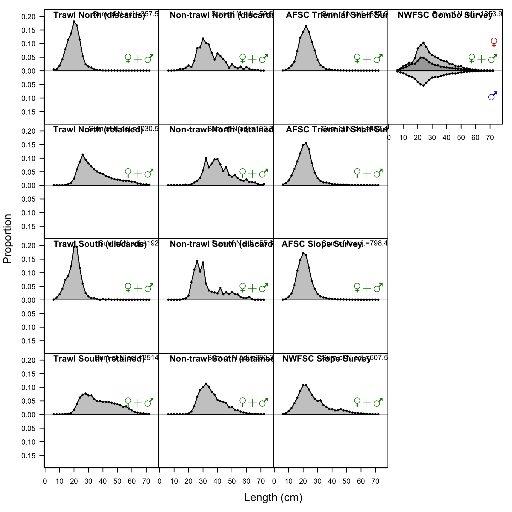
Length comp data, aggregated across time by fleet.
Labels 'retained' and 'discard' indicate discarded or retained sampled for each fleet. Panels without this designation represent the whole catch.
file: comp_lendat__aggregated_across_time.png
Length comp data, comparing across fleets (plot 1 of 3)
file: comp_lendat__page1_multi-fleet_comparison.png
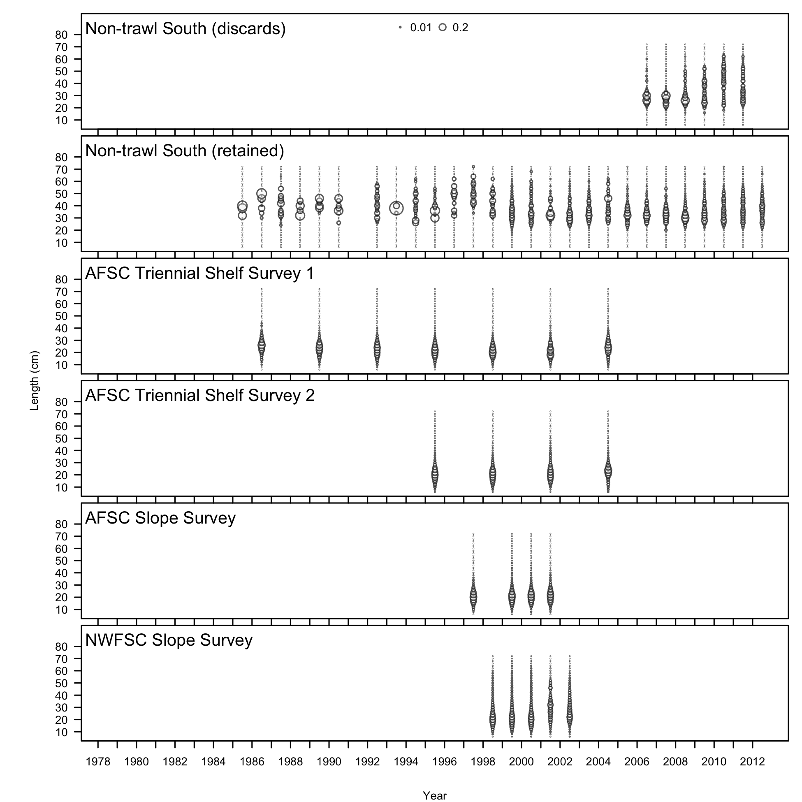
Length comp data, comparing across fleets (plot 2 of 3)
file: comp_lendat__page2_multi-fleet_comparison.png

Length comp data, comparing across fleets (plot 3 of 3)
file: comp_lendat__page3_multi-fleet_comparison.png

Length comp data, retained, Trawl North (plot 1 of 2).
'N adj.' is the input sample size after data-weighting adjustment. N eff. is the calculated effective sample size used in the McAllister-Ianelli tuning method.
file: comp_lendat_flt1mkt2_page1.png

Length comp data, retained, Trawl North (plot 1 of 2).
'N adj.' is the input sample size after data-weighting adjustment. N eff. is the calculated effective sample size used in the McAllister-Ianelli tuning method. (plot 2 of 2)
file: comp_lendat_flt1mkt2_page2.png
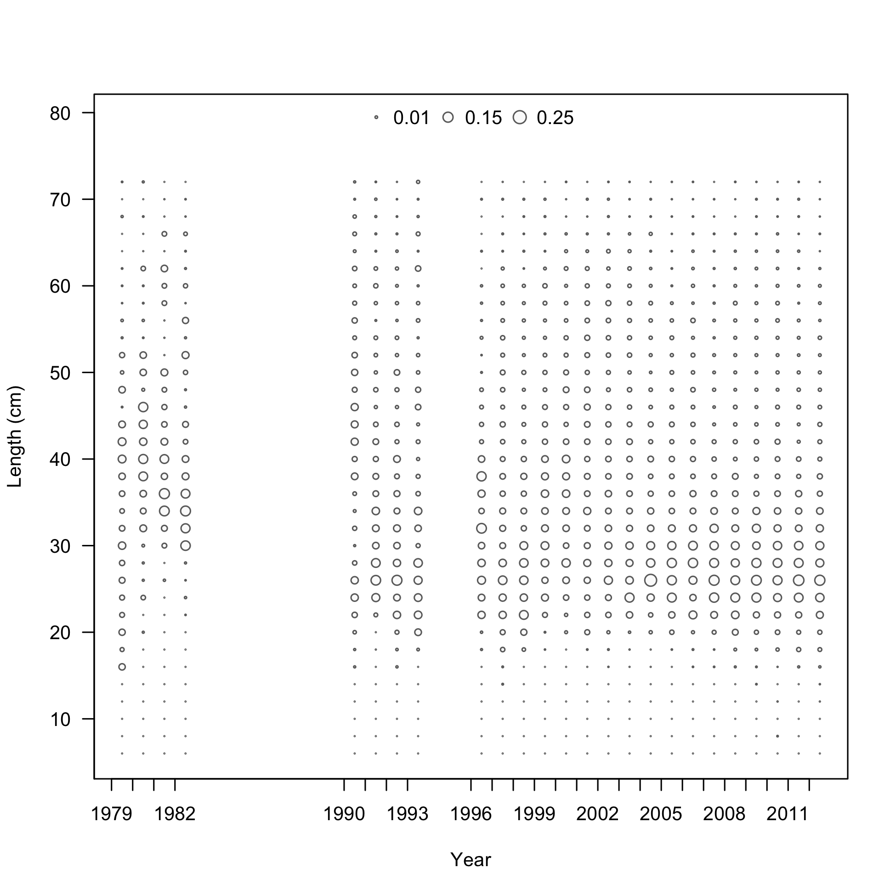
Length comp data, retained, Trawl North (max=0.21) (plot 2 of 2)
file: comp_lendat_bubflt1mkt2_page2.png

WARNING: this figure is based on multinomial likelihood and has not been updated to account for Dirichlet-Multinomial likelihood and the sample size adjustment associated with the estimated log(Θ) parameters.
Mean length for Trawl North with 95% confidence intervals based on current samples sizes.
file: comp_lendat_data_weighting_TA1.8_Trawl North.png

Length comp data, discard, Trawl North.
'N adj.' is the input sample size after data-weighting adjustment. N eff. is the calculated effective sample size used in the McAllister-Ianelli tuning method.
file: comp_lendat_flt1mkt1.png
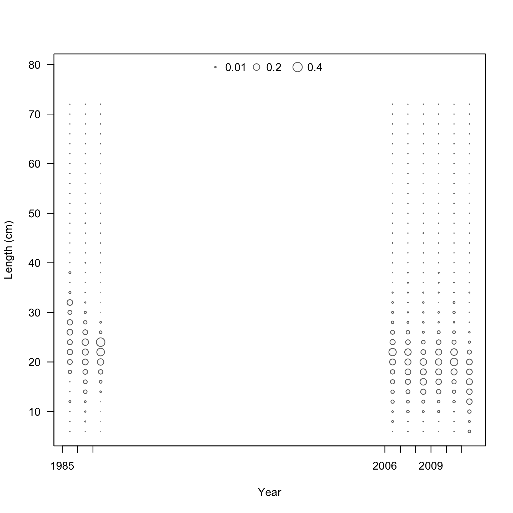
Length comp data, discard, Trawl North (max=0.33)
file: comp_lendat_bubflt1mkt1.png
WARNING: this figure is based on multinomial likelihood and has not been updated to account for Dirichlet-Multinomial likelihood and the sample size adjustment associated with the estimated log(Θ) parameters.
Mean length for Trawl North with 95% confidence intervals based on current samples sizes.
file: comp_lendat_data_weighting_TA1.8_Trawl North.png
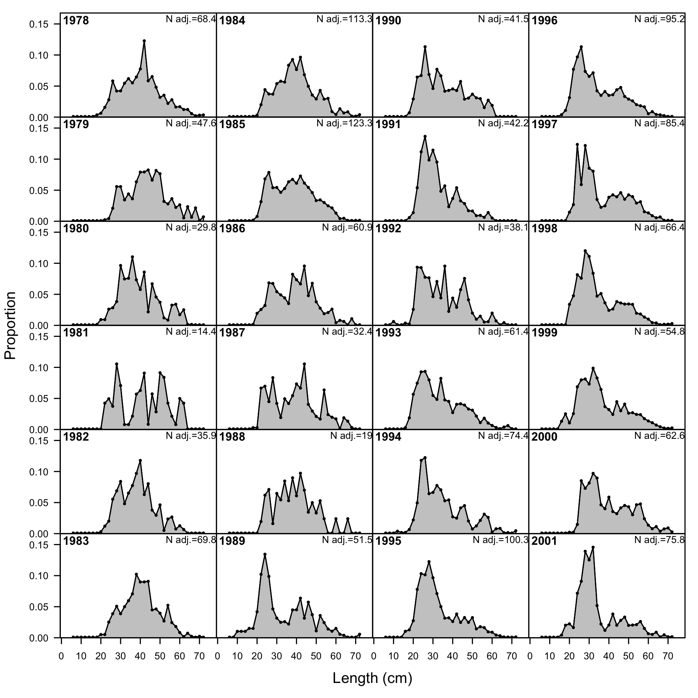
Length comp data, retained, Trawl South (plot 1 of 2).
'N adj.' is the input sample size after data-weighting adjustment. N eff. is the calculated effective sample size used in the McAllister-Ianelli tuning method.
file: comp_lendat_flt2mkt2_page1.png
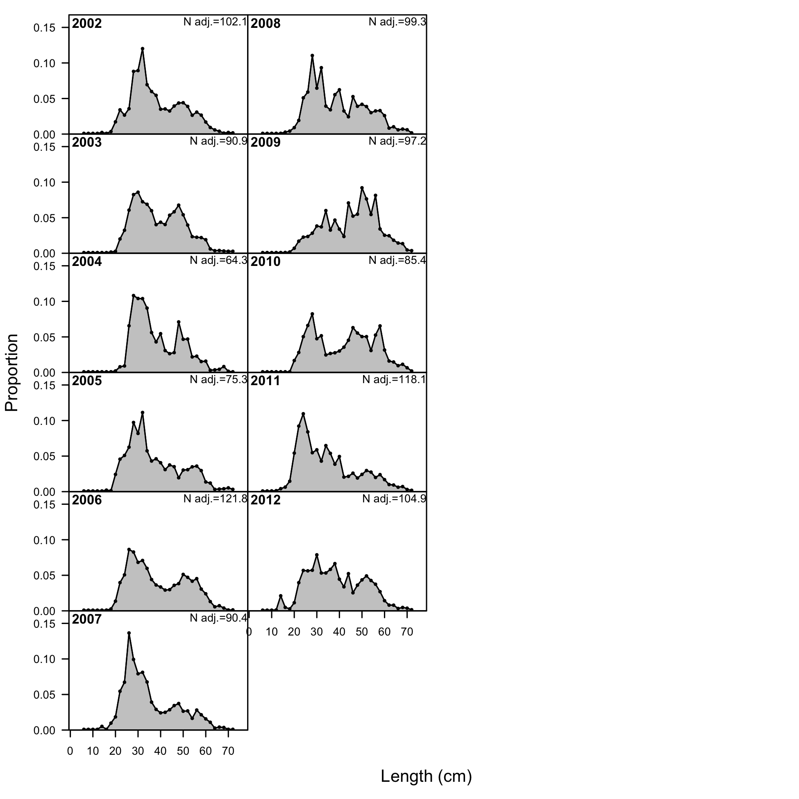
Length comp data, retained, Trawl South (plot 1 of 2).
'N adj.' is the input sample size after data-weighting adjustment. N eff. is the calculated effective sample size used in the McAllister-Ianelli tuning method. (plot 2 of 2)
file: comp_lendat_flt2mkt2_page2.png

Length comp data, retained, Trawl South (max=0.15) (plot 2 of 2)
file: comp_lendat_bubflt2mkt2_page2.png

WARNING: this figure is based on multinomial likelihood and has not been updated to account for Dirichlet-Multinomial likelihood and the sample size adjustment associated with the estimated log(Θ) parameters.
Mean length for Trawl South with 95% confidence intervals based on current samples sizes.
file: comp_lendat_data_weighting_TA1.8_Trawl South.png

Length comp data, discard, Trawl South.
'N adj.' is the input sample size after data-weighting adjustment. N eff. is the calculated effective sample size used in the McAllister-Ianelli tuning method.
file: comp_lendat_flt2mkt1.png
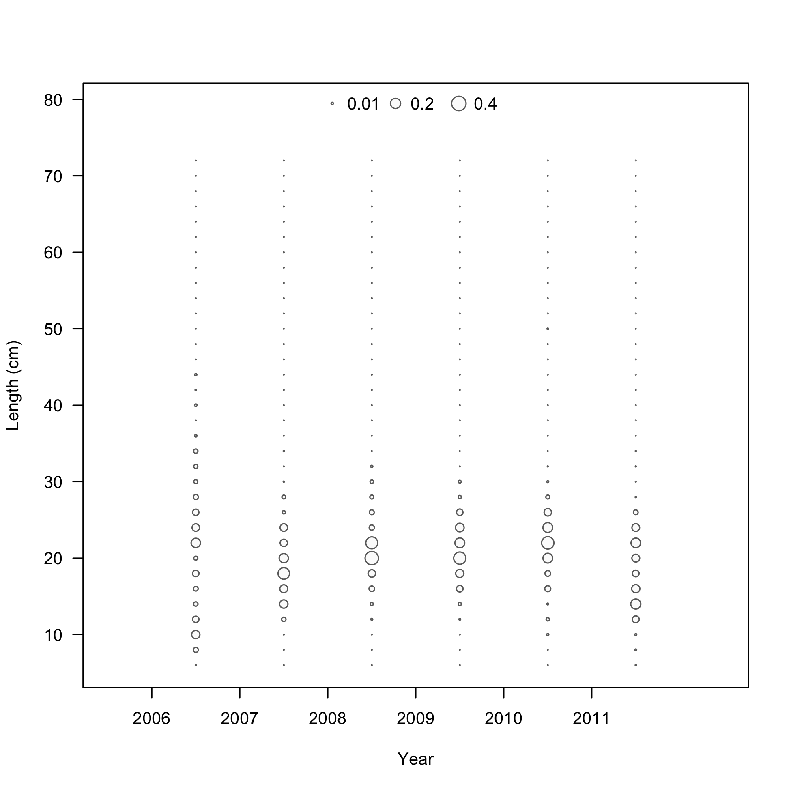
Length comp data, discard, Trawl South (max=0.34)
file: comp_lendat_bubflt2mkt1.png
WARNING: this figure is based on multinomial likelihood and has not been updated to account for Dirichlet-Multinomial likelihood and the sample size adjustment associated with the estimated log(Θ) parameters.
Mean length for Trawl South with 95% confidence intervals based on current samples sizes.
file: comp_lendat_data_weighting_TA1.8_Trawl South.png
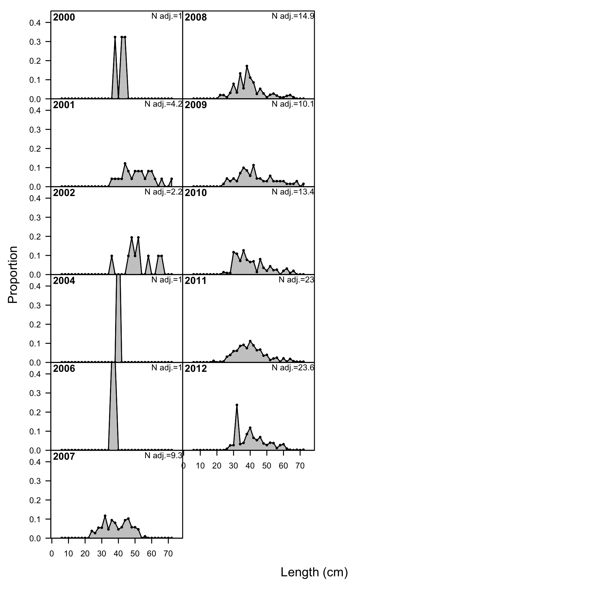
Length comp data, retained, Non-trawl North.
'N adj.' is the input sample size after data-weighting adjustment. N eff. is the calculated effective sample size used in the McAllister-Ianelli tuning method.
file: comp_lendat_flt3mkt2.png

Length comp data, retained, Non-trawl North (max=0.97)
file: comp_lendat_bubflt3mkt2.png

WARNING: this figure is based on multinomial likelihood and has not been updated to account for Dirichlet-Multinomial likelihood and the sample size adjustment associated with the estimated log(Θ) parameters.
Mean length for Non-trawl North with 95% confidence intervals based on current samples sizes.
file: comp_lendat_data_weighting_TA1.8_Non-trawl North.png

Length comp data, discard, Non-trawl North.
'N adj.' is the input sample size after data-weighting adjustment. N eff. is the calculated effective sample size used in the McAllister-Ianelli tuning method.
file: comp_lendat_flt3mkt1.png
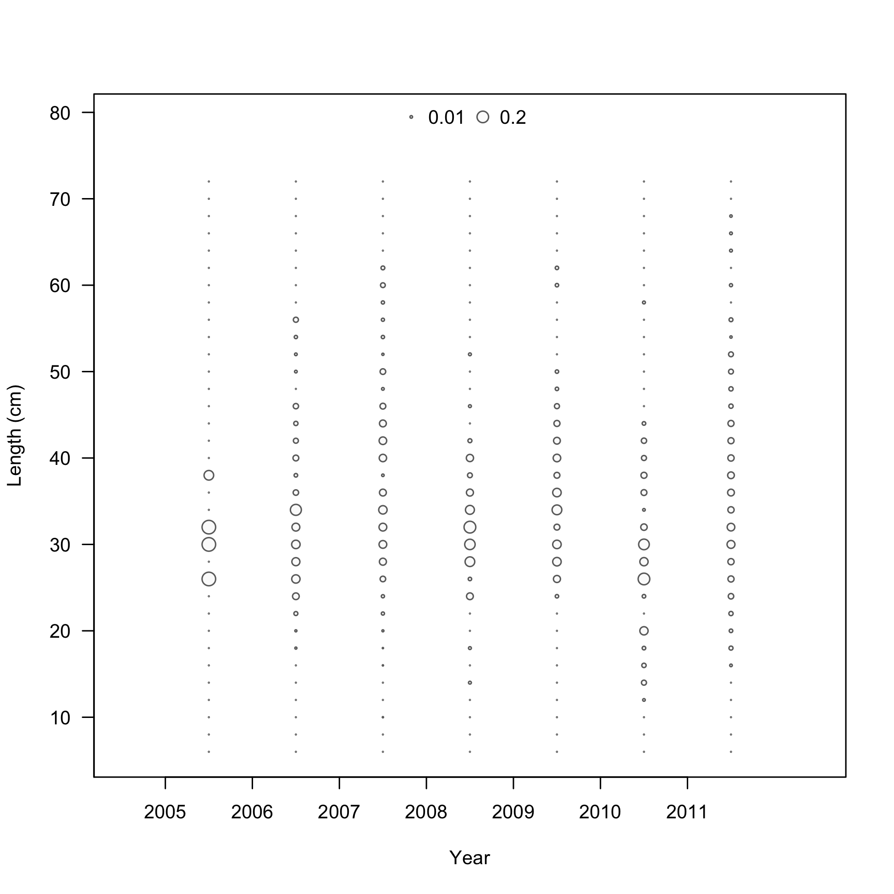
Length comp data, discard, Non-trawl North (max=0.28)
file: comp_lendat_bubflt3mkt1.png
WARNING: this figure is based on multinomial likelihood and has not been updated to account for Dirichlet-Multinomial likelihood and the sample size adjustment associated with the estimated log(Θ) parameters.
Mean length for Non-trawl North with 95% confidence intervals based on current samples sizes.
file: comp_lendat_data_weighting_TA1.8_Non-trawl North.png
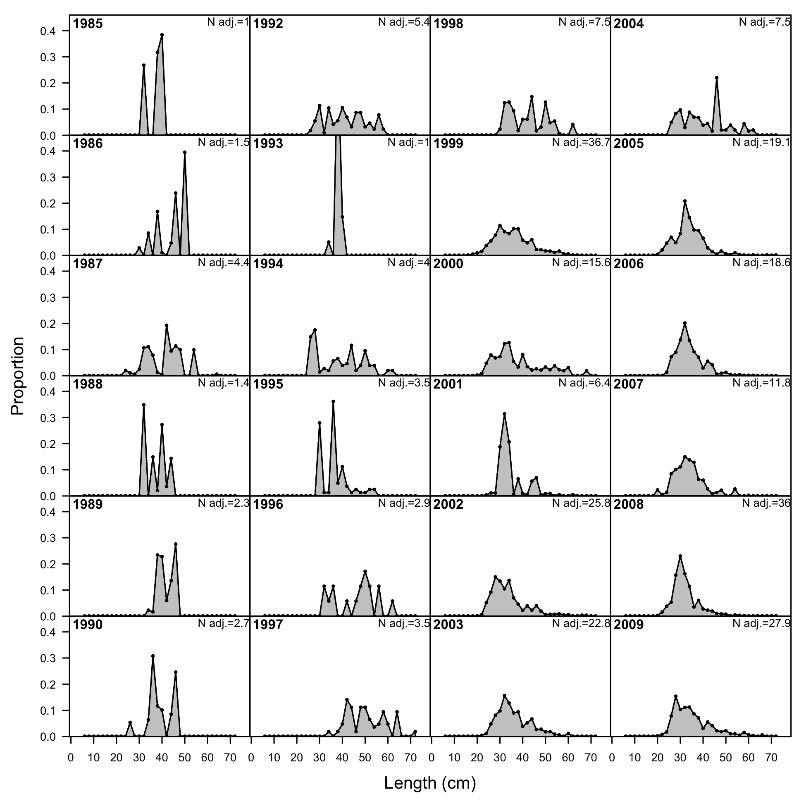
Length comp data, retained, Non-trawl South (plot 1 of 2).
'N adj.' is the input sample size after data-weighting adjustment. N eff. is the calculated effective sample size used in the McAllister-Ianelli tuning method.
file: comp_lendat_flt4mkt2_page1.png
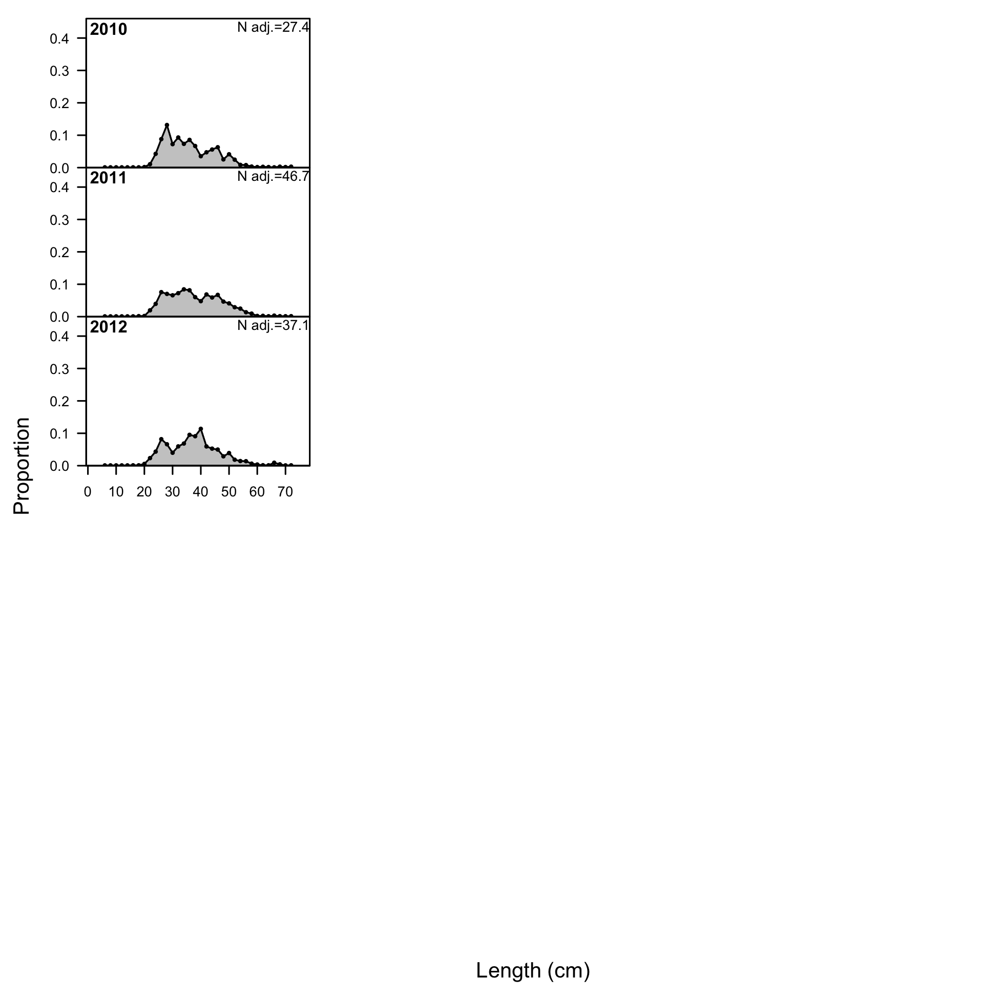
Length comp data, retained, Non-trawl South (plot 1 of 2).
'N adj.' is the input sample size after data-weighting adjustment. N eff. is the calculated effective sample size used in the McAllister-Ianelli tuning method. (plot 2 of 2)
file: comp_lendat_flt4mkt2_page2.png

Length comp data, retained, Non-trawl South (max=0.77) (plot 2 of 2)
file: comp_lendat_bubflt4mkt2_page2.png

WARNING: this figure is based on multinomial likelihood and has not been updated to account for Dirichlet-Multinomial likelihood and the sample size adjustment associated with the estimated log(Θ) parameters.
Mean length for Non-trawl South with 95% confidence intervals based on current samples sizes.
file: comp_lendat_data_weighting_TA1.8_Non-trawl South.png
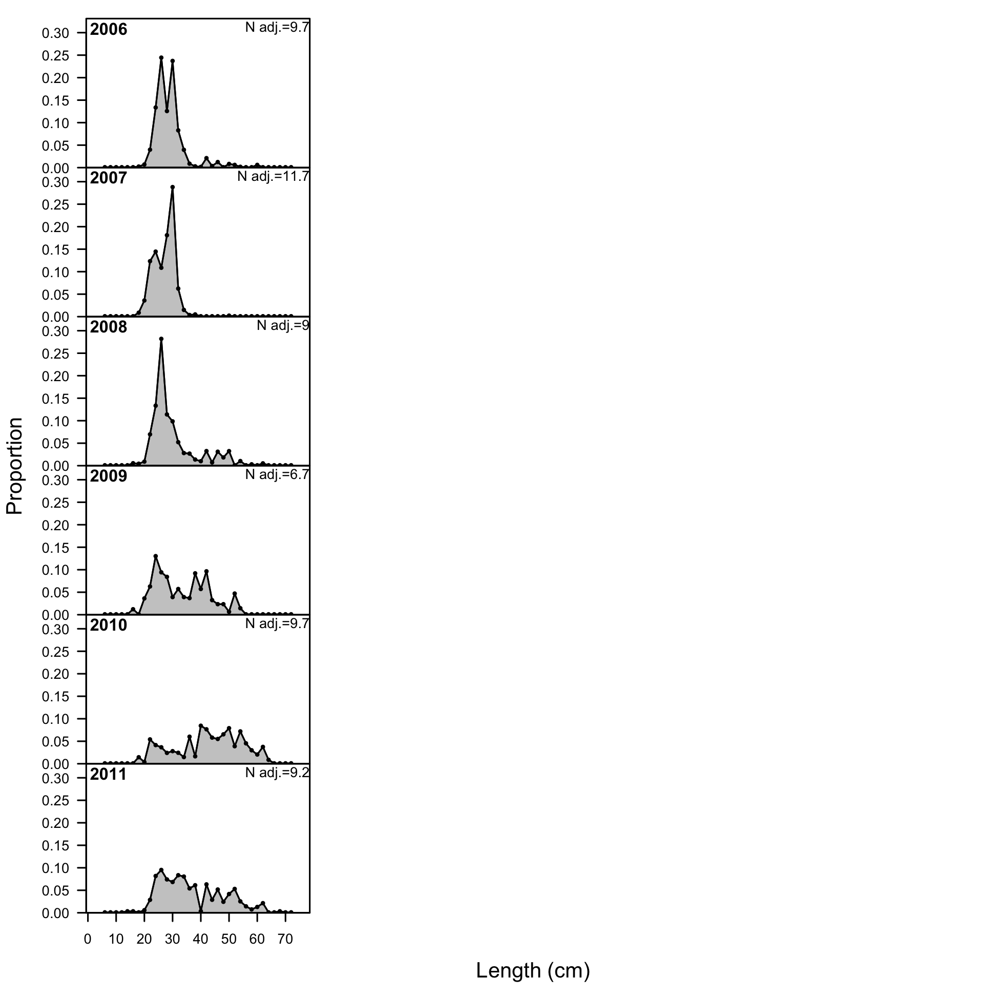
Length comp data, discard, Non-trawl South.
'N adj.' is the input sample size after data-weighting adjustment. N eff. is the calculated effective sample size used in the McAllister-Ianelli tuning method.
file: comp_lendat_flt4mkt1.png

Length comp data, discard, Non-trawl South (max=0.29)
file: comp_lendat_bubflt4mkt1.png
WARNING: this figure is based on multinomial likelihood and has not been updated to account for Dirichlet-Multinomial likelihood and the sample size adjustment associated with the estimated log(Θ) parameters.
Mean length for Non-trawl South with 95% confidence intervals based on current samples sizes.
file: comp_lendat_data_weighting_TA1.8_Non-trawl South.png

Length comp data, whole catch, AFSC Triennial Shelf Survey 1.
'N adj.' is the input sample size after data-weighting adjustment. N eff. is the calculated effective sample size used in the McAllister-Ianelli tuning method.
file: comp_lendat_flt5mkt0.png
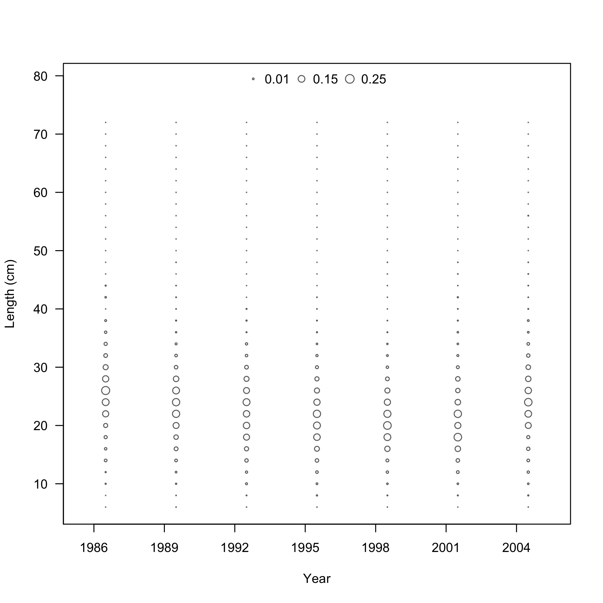
Length comp data, whole catch, AFSC Triennial Shelf Survey 1 (max=0.22)
file: comp_lendat_bubflt5mkt0.png

WARNING: this figure is based on multinomial likelihood and has not been updated to account for Dirichlet-Multinomial likelihood and the sample size adjustment associated with the estimated log(Θ) parameters.
Mean length for AFSC Triennial Shelf Survey 1 with 95% confidence intervals based on current samples sizes.
file: comp_lendat_data_weighting_TA1.8_AFSC Triennial Shelf Survey 1.png
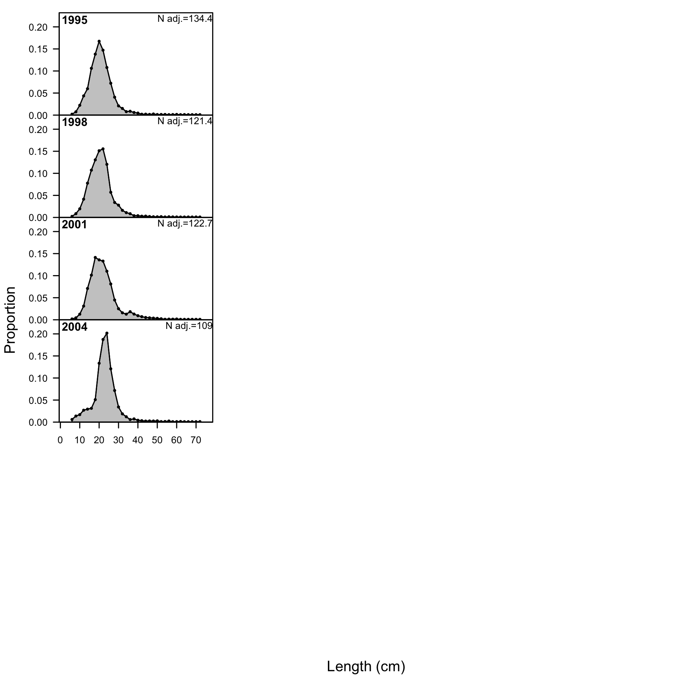
Length comp data, whole catch, AFSC Triennial Shelf Survey 2.
'N adj.' is the input sample size after data-weighting adjustment. N eff. is the calculated effective sample size used in the McAllister-Ianelli tuning method.
file: comp_lendat_flt6mkt0.png

Length comp data, whole catch, AFSC Triennial Shelf Survey 2 (max=0.2)
file: comp_lendat_bubflt6mkt0.png

WARNING: this figure is based on multinomial likelihood and has not been updated to account for Dirichlet-Multinomial likelihood and the sample size adjustment associated with the estimated log(Θ) parameters.
Mean length for AFSC Triennial Shelf Survey 2 with 95% confidence intervals based on current samples sizes.
file: comp_lendat_data_weighting_TA1.8_AFSC Triennial Shelf Survey 2.png

Length comp data, whole catch, AFSC Slope Survey.
'N adj.' is the input sample size after data-weighting adjustment. N eff. is the calculated effective sample size used in the McAllister-Ianelli tuning method.
file: comp_lendat_flt7mkt0.png

Length comp data, whole catch, AFSC Slope Survey (max=0.18)
file: comp_lendat_bubflt7mkt0.png

WARNING: this figure is based on multinomial likelihood and has not been updated to account for Dirichlet-Multinomial likelihood and the sample size adjustment associated with the estimated log(Θ) parameters.
Mean length for AFSC Slope Survey with 95% confidence intervals based on current samples sizes.
file: comp_lendat_data_weighting_TA1.8_AFSC Slope Survey.png
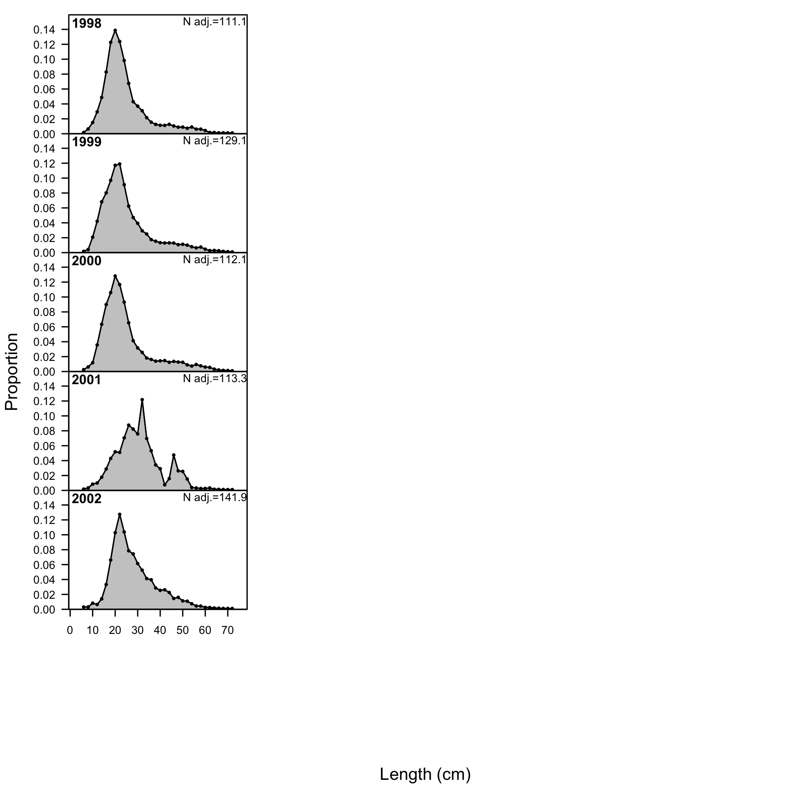
Length comp data, whole catch, NWFSC Slope Survey.
'N adj.' is the input sample size after data-weighting adjustment. N eff. is the calculated effective sample size used in the McAllister-Ianelli tuning method.
file: comp_lendat_flt8mkt0.png
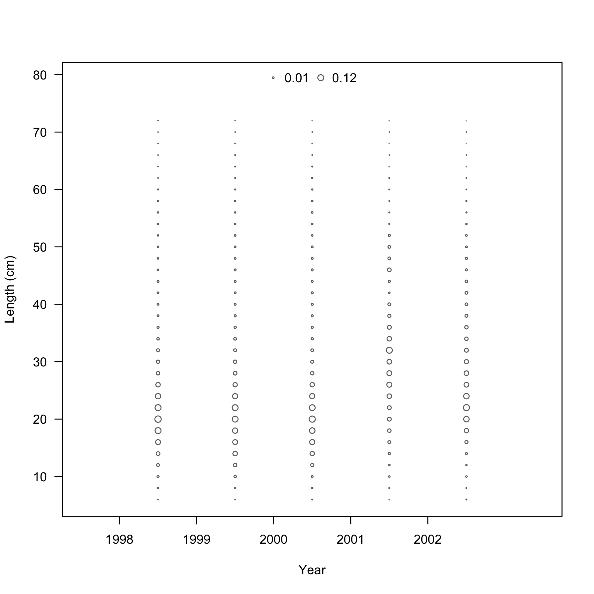
Length comp data, whole catch, NWFSC Slope Survey (max=0.14)
file: comp_lendat_bubflt8mkt0.png

WARNING: this figure is based on multinomial likelihood and has not been updated to account for Dirichlet-Multinomial likelihood and the sample size adjustment associated with the estimated log(Θ) parameters.
Mean length for NWFSC Slope Survey with 95% confidence intervals based on current samples sizes.
file: comp_lendat_data_weighting_TA1.8_NWFSC Slope Survey.png
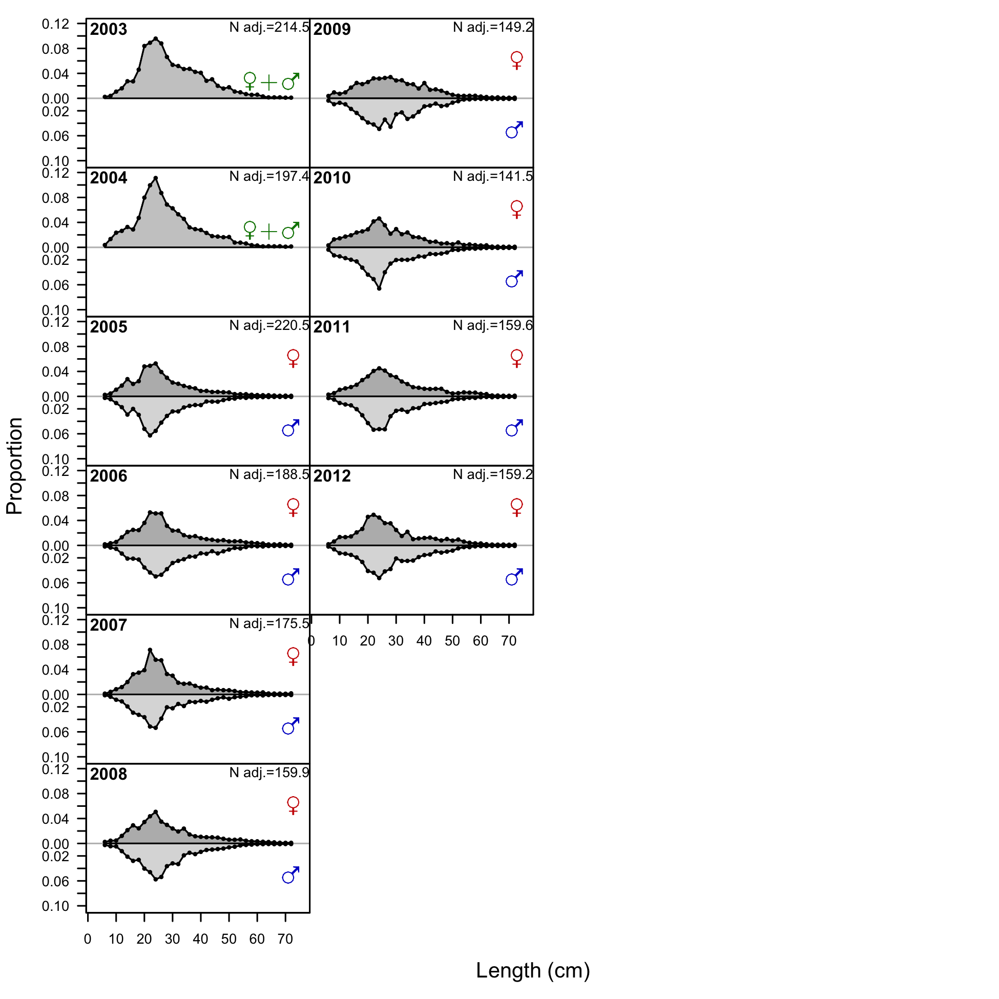
Length comp data, whole catch, NWFSC Combo Survey.
'N adj.' is the input sample size after data-weighting adjustment. N eff. is the calculated effective sample size used in the McAllister-Ianelli tuning method.
file: comp_lendat_flt9mkt0.png
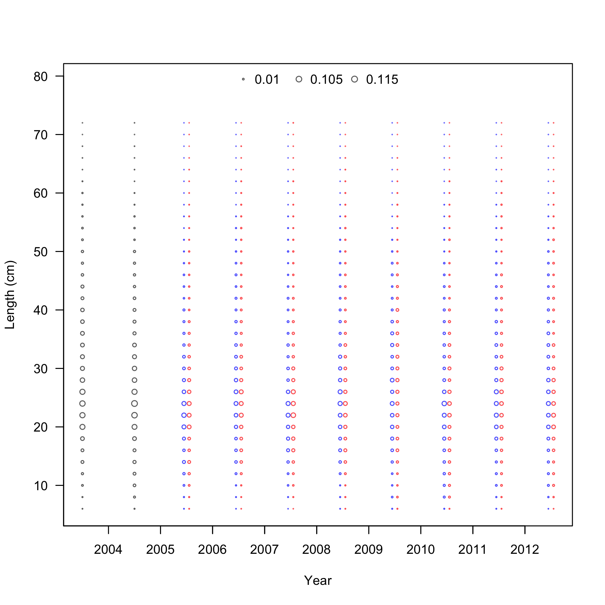
Length comp data, whole catch, NWFSC Combo Survey (max=0.11)
file: comp_lendat_bubflt9mkt0.png

WARNING: this figure is based on multinomial likelihood and has not been updated to account for Dirichlet-Multinomial likelihood and the sample size adjustment associated with the estimated log(Θ) parameters.
Mean length for NWFSC Combo Survey with 95% confidence intervals based on current samples sizes.
file: comp_lendat_data_weighting_TA1.8_NWFSC Combo Survey.png
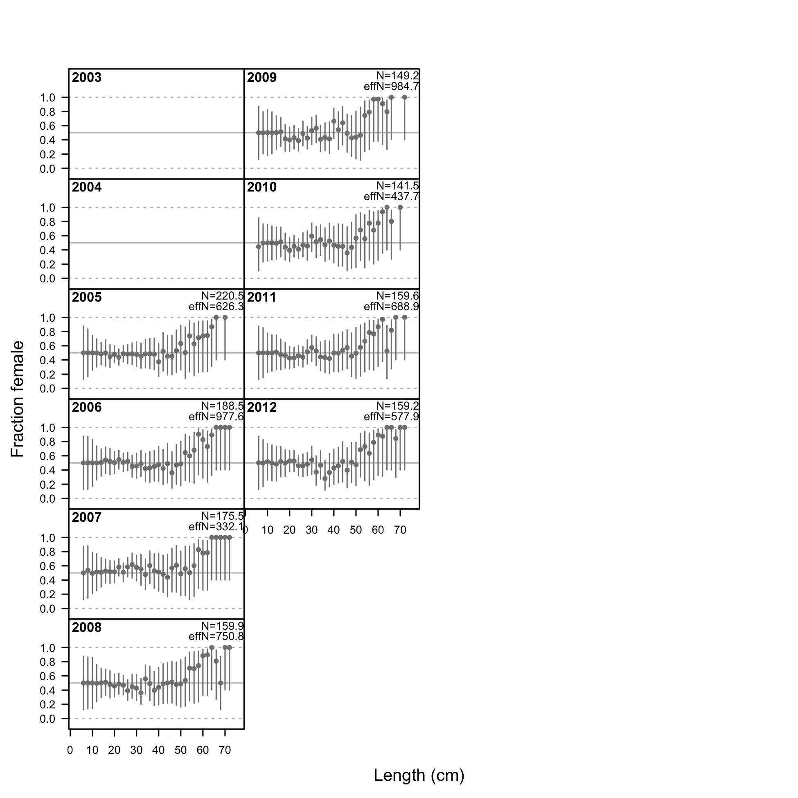
Sex ratios for length comps, whole catch, NWFSC Combo Survey.
Observed sex ratios (points) with 75% intervals (vertical lines) calculated as a Jeffreys interval based on the adjusted input sample size.
file: sexratio_data_len_flt9mkt0.png
{kind=link}
{kind=link}
{kind=link}
{kind=link}
{kind=link}
{kind=link}
{kind=link}
{kind=link}
{kind=link}
{kind=link}
{kind=link}
{kind=link}
{kind=link}
{kind=link}
{kind=link}
{kind=link}
{kind=link}
{kind=link}